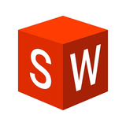
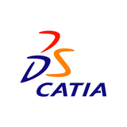
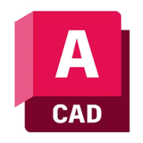
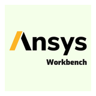
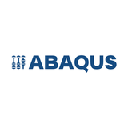
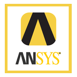
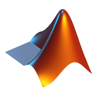

SolidWorks
طراحی سهبعدی قطعه و اسمبلی و تهیهی نقشههای صنعتی. رابط سادهای دارد و برای شروع یادگیری طراحی مناسب است.
چند نرمافزار معروف و پرکاربرد مهندسی مکانیک از هر حوزه، با یک توضیح کوتاه برای اینکه بدانی هر کدام به چه کاری میآید.
در طول سال، دورهی آموزشی این نرمافزارها با همکاری و همیاری اساتید گروه مهندسی مکانیک و انجمن علمی مهندسی مکانیک برگزار میشود. برای زمان و ثبتنام دورهها، اطلاعیههای کانال انجمن علمی را دنبال کن (لینک تلگرام با فیلترشکن باز میشود).

طراحی سهبعدی قطعه و اسمبلی و تهیهی نقشههای صنعتی. رابط سادهای دارد و برای شروع یادگیری طراحی مناسب است.

طراحی پیشرفته در صنایع خودرو و هوافضا، مخصوصاً برای سطوح و قطعات پیچیده. بعد از تسلط روی SolidWorks یادگیریاش منطقیتر است.

نقشهکشی دوبعدی و آمادهسازی نقشههای صنعتی و اجرایی. در بسیاری از دفترهای فنی کاربرد دارد.

تحلیل تنش، حرارت و ارتعاش قطعات با روش المان محدود. برای پروژههای تحلیلی درسهایی مثل مقاومت مصالح و ارتعاشات به کار میآید.

مخصوص تحلیلهای پیچیدهتر مثل رفتار غیرخطی مواد، تماس بین قطعات و شکست. در پژوهشهای دانشگاهی زیاد استفاده میشود.

شبیهسازی جریان هوا و آب و انتقال حرارت. برای پروژههای مکانیک سیالات، انتقال حرارت و آیرودینامیک مفید است.

محاسبات عددی، رسم نمودار و حل معادلات مهندسی. تقریباً در همهی گرایشهای مکانیک لازم میشود.
زبان برنامهنویسی رایگان برای محاسبات، تحلیل داده و اتوماسیون. میتواند جای بخشی از کارهای MATLAB را بگیرد.
نوشتن برنامهی ماشینکاری برای دستگاههای فرز و تراش CNC از روی مدل سهبعدی.
لازم نیست همهی این نرمافزارها را یاد بگیری. تسلط روی چند نرمافزار مرتبط با مسیر خودت، از آشنایی سطحی با همه ارزشمندتر است.